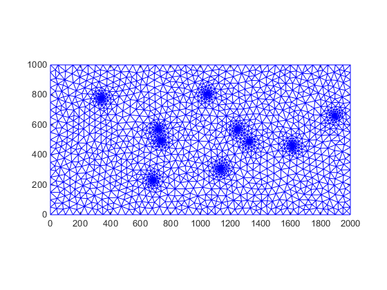
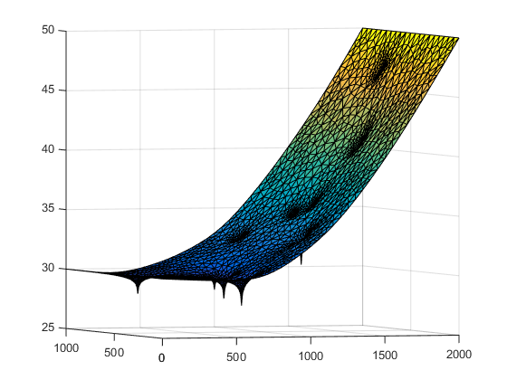

2D transport simulation - Example 1
| main | Tutorials | Functions | website |
Contents
In this tutorial we will first demonstrate the 2D transport over a 2D steady state groundwater flow domain. We will go through the steps of solving steady state groundwater flow without great detail as there are already other tutorials that cover that in depth.
The focus of this tutorial is the transport simulation
Problem definition and mesh generation
We will consider an orthogonal domain with dimensions 2x1 km. We will also assume that the domain is bounded left and right by constant head boundaries, 30 and 50 m respectively, while the top and bottom boundaries are no flow. In the modeling domain there are several wells. Last to keep things simple we will assume homogenous hydraulic conductivity and uniform recharge.
First we describe the geometric features which are:
the polygon domain
domain.Geometry = 'Polygon';
domain.X = [0 2000 2000 0 0 nan];
domain.Y = [0 0 1000 1000 0 nan];
and the wells
w = [339,777,0.08; 1896,660,0.12; 1615,459,0.13; 1247,570,0.04;
1136,308,0.15; 684,232,0.13;735,494,0.11;1044,806,0.08;1325,488,0.09;
721,570,0.07];
for ii = 1:size(w,1)
wells(ii,1).Geometry = 'Point';
wells(ii,1).X = w(ii,1);
wells(ii,1).Y = w(ii,2);
wells(ii,1).DistMin = 5;
wells(ii,1).DistMax = 100;
wells(ii,1).LcMin = 5;
wells(ii,1).LcMax = 50;
end
We can now generate the mesh following the standard procedure as described in the relevant tutorials.
rect_dom = CSGobj_v2(2,1,10,10,1); rect_dom = rect_dom.readshapefile(domain); rect_dom = rect_dom.readshapefile(wells); % define the global mesh options meshopt = msim_mesh_options; meshopt.lc_gen = 150; meshopt.embed_points = 1; % execute gmsh to generate the mesh rect_dom.writegeo('transp_ex1', meshopt); gmsh_path = 'C:\Users\giorgk\Downloads\gmsh-4.4.1-Windows64\gmsh-4.4.1-Windows64\gmsh.exe'; rect_dom.runGmsh('transp_ex1', gmsh_path, []);
Info : Running 'C:\Users\giorgk\Downloads\gmsh-4.4.1-Windows64\gmsh-4.4.1-Windows64\gmsh.exe transp_ex1.geo -2' [Gmsh 4.4.1, 1 node, max. 1 thread] Info : Started on Sun Sep 01 17:43:28 2019 Info : Reading 'transp_ex1.geo'... Info : Done reading 'transp_ex1.geo' Info : Meshing 1D... Info : Meshing curve 1 (Line) Info : Meshing curve 2 (Line) Info : Meshing curve 3 (Line) Info : Meshing curve 4 (Line) Info : Done meshing 1D (0 s) Info : Meshing 2D... Info : Meshing surface 1 (Plane, Delaunay) Info : Done meshing 2D (0.0625 s) Info : 1768 vertices 3548 elements Info : Writing 'transp_ex1.msh'... Info : Done writing 'transp_ex1.msh' Info : Stopped on Sun Sep 01 17:43:28 2019
read the mesh into matlab workspace
[p, MSH]=read_2D_Gmsh('transp_ex1', 0, 0); Nel = size(MSH(3,1).elem(1,1).id, 1); Np = size(p, 1); triplot(MSH(3,1).elem(1,1).id, p(:,1), p(:,2)) axis equal axis([0 2000 0 1000])
Reading points... Reading Elements...
Flow simulation
With the discretized domain at hand we can move on to the flow simulation.
Boundary conditions
The domain has constant head left and right. First we identify the ids of the nodes that correspon to the boundary conditions and prepare the variable CH as follows:
id_left = find(p(:,1) < 0.1);
id_right = find(p(:,1) > domain.X(2) - 0.1);
CH = [id_left 30*ones(length(id_left),1);
id_right 50*ones(length(id_right),1)];
Well Fluxes
Total_pumping = -5000; Well_fluxes = nan(length(wells),2); for ii = 1:size(wells,1) [~, id] = min(sqrt((wells(ii,1).X - p(:,1)).^2+(wells(ii,1).Y - p(:,2)).^2)); Well_fluxes(ii,:)=[id Total_pumping*w(ii,3)]; end
Transmissivity
The transmissivity is uniform and we are going to define it on the elements
Tel=20*ones(Nel,1)*10; %m^2/day
Assemble matrices
simopt.dim = 2; simopt.el_type = 'triangle'; simopt.el_order = 'linear'; [Kglo, H]= Assemble_LHS(p, MSH(3,1).elem(1,1).id, Tel , CH, [], simopt);
Convert the well fluxes to sparse matrix which are the only fluxes in our hypothetical example
F = sparse(Well_fluxes(:,1),1,Well_fluxes(:,2),length(H),1);
solve
H = solve_system(Kglo,H,F);
visualize
clf trisurf(MSH(3,1).elem(1,1).id,p(:,1),p(:,2),H) view(-18,2)